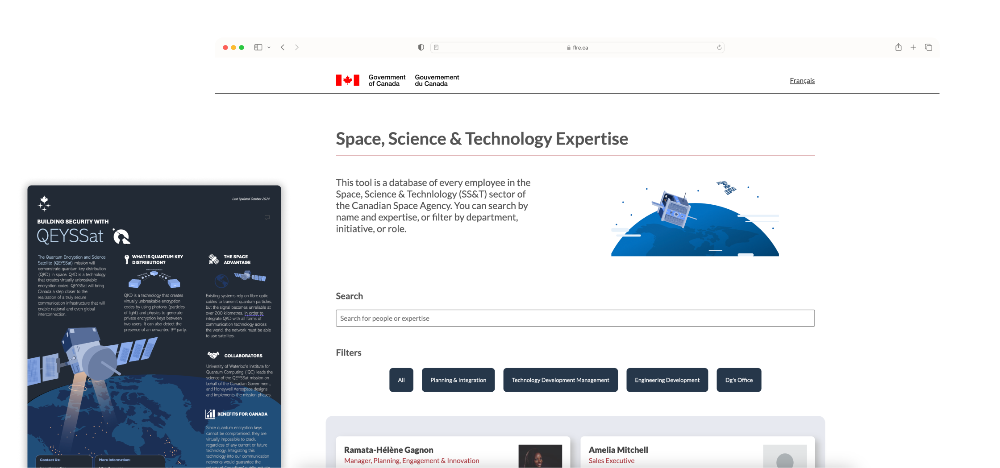
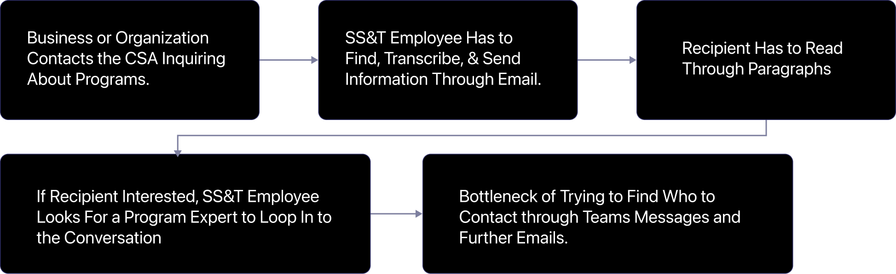
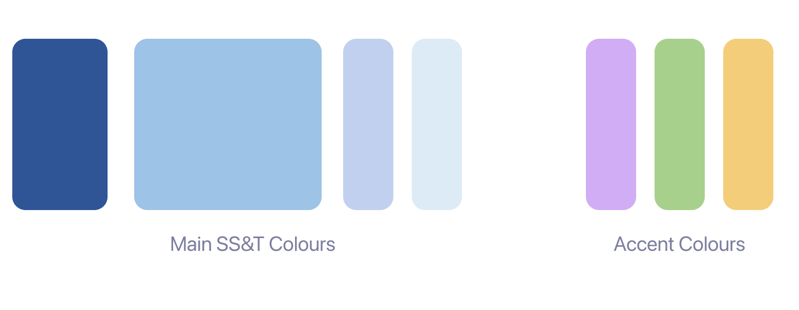
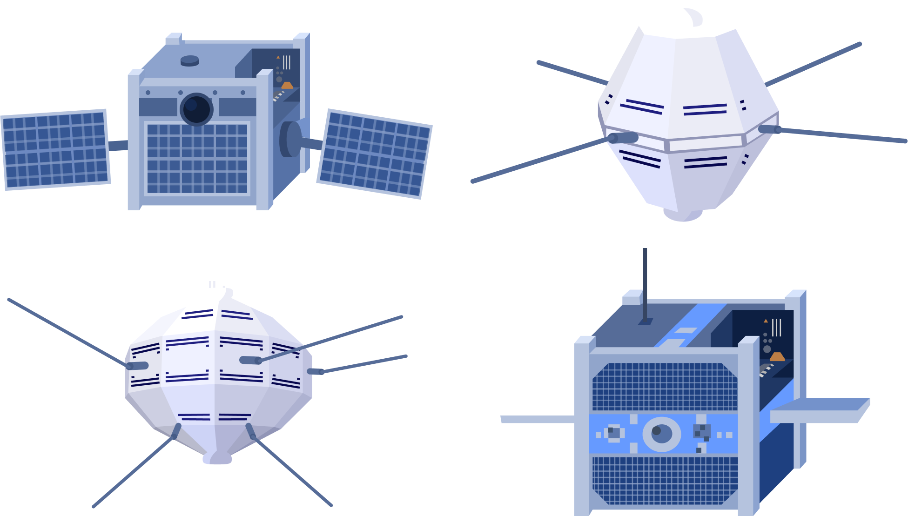
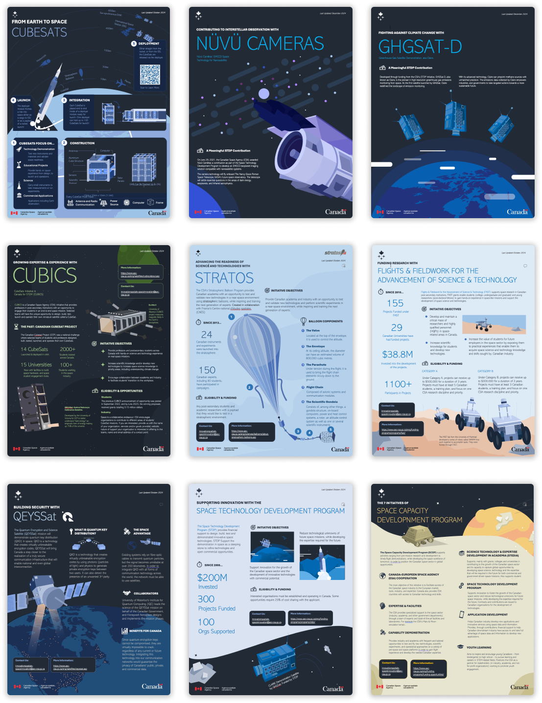
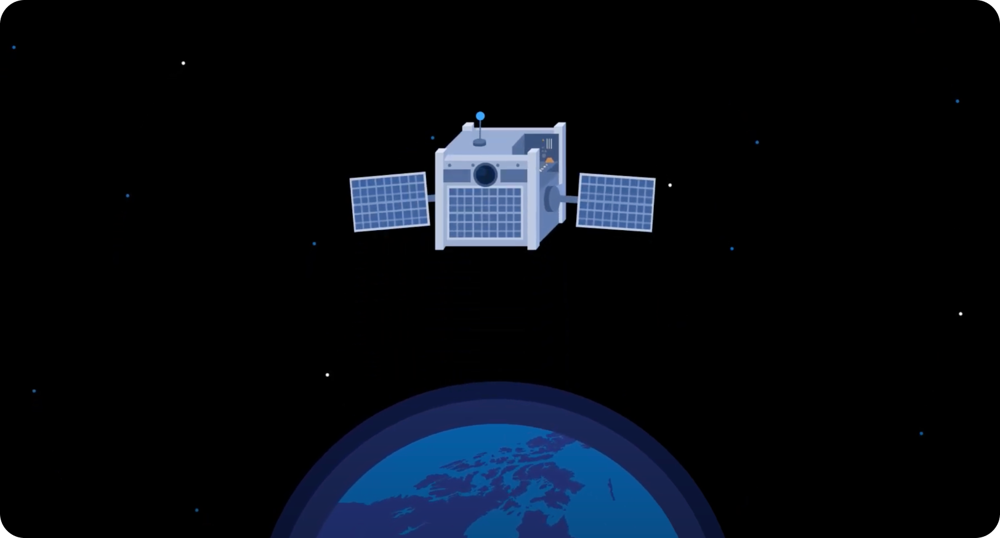
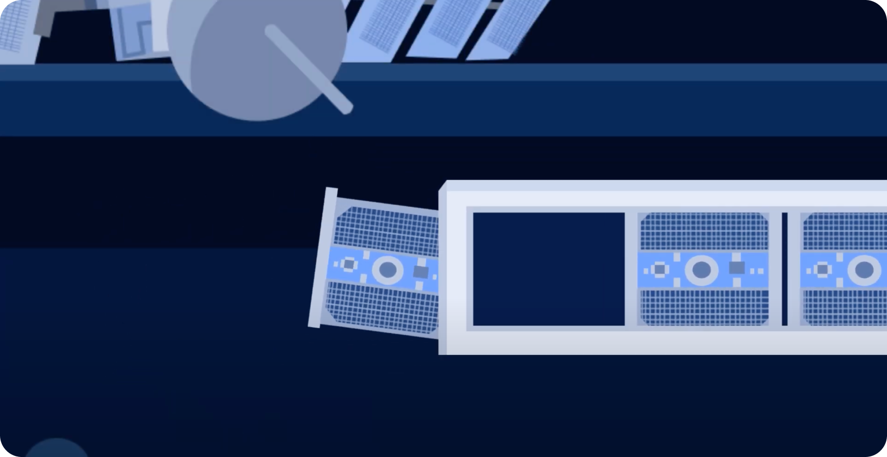
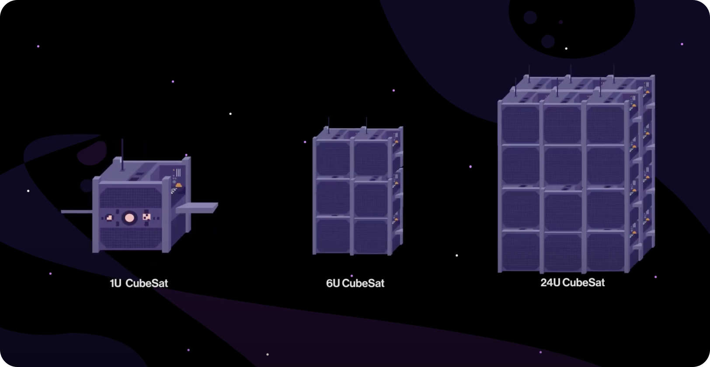

What Are CubeSats?
In my second term as a design intern for the Canadian Space Agency (CSA), I was responsible for creating an animated video showcasing the benefits of cubesats, and establishing a design system for the Space, Science & Technology (SS&T) Directorate.
Role
Motion & Visual Design Intern
Timeline
Part Time Internship
Software
After Effects, Illustrator, Figma
Supervisor
Ramata Helene-Gagnon
Context
Engaging the Canadian Space Sector

About SS&T
The branch of the agency I worked in was primarily responsible for engaging startups, small businesses, universities, and students through space exploration, competitions, and funding opportunities.
Design Challenge
How can we help universities, startups, and local businesses better understand the CSA’s funding and consultation opportunities and facilitate program participation?
Research & Analysis
An Unproductive Current System
Employee Workflow
With the SS&T directorate’s primary goal being to promote and provide funding and mentorship opportunities, through discussing with employees in my team, they often found themselves faced with troubles with the following workflow.

Identification
Focusing the Problems
Problem 1
Stakeholders need general program information in an easily digestible way during their initial point of contact.
Problem 2
If committed to the program, they need an expert to communicate with, but SS&T employees don’t always know who to send their way.
Solution Part 1
Consistent Information Tools
Simplifying the Workflow
Normally when replying to email inquiries about programs, or reaching out to post-secondary institutions, SS&T employees need to draft long emails outlining the programs or send text-heavy webpages. To combat this, I designed informational tools designed to oultine programs in a friendlier way.
Forming a Typography System

Typography system created for the SS&T Tools
Creating a Colour Pallete

Primary and accent colour pallete to keep informational tools consistent
Illustration Style
Since a lot of SS&T's work is done in collaboration with universities and students, having a fun yet sophisticated illustration style to represent the work of the agency was imporant. I focused on consistent and clear shapes, and used minimal to no line work.

Sample illustrations using the style.
Implementing the System Through Infographics
To streamline communication with stakeholders, I took 10 of SS&T's initiatives and put them into easily digestible infographics.

Infographics implementing the style about key SS&T initiatives
CubeSat Informational Video
CubeSats are an integral part of the work SS&T does, but most students don't actaully know about their value and potential. This is why I created an animated video that explains the benefits of CubeSats that can be easily shared to universities and students.



Stills from the animated video: What are CubeSats?
Solution Part 2
To see the second part of this internship regarding the solution for the second major problem please view the next case study on the CSA Expertise Tool.

Reflection
What Did I Learn?
Details Matter
When handing off the infographics to the communications team to publish on the official CSA website, I had to make sure that all text was readable, met contrast standards, and that branding was placed in the right areas. This emphasized how important small details are to the success of official work.
Block Out Movement First
When it came to animating the short video, I learned that its better to block out the general movements of all the main items first in each shot before going into adding details and weighting to the objects.